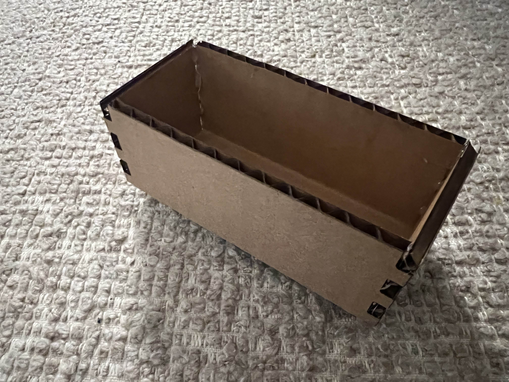
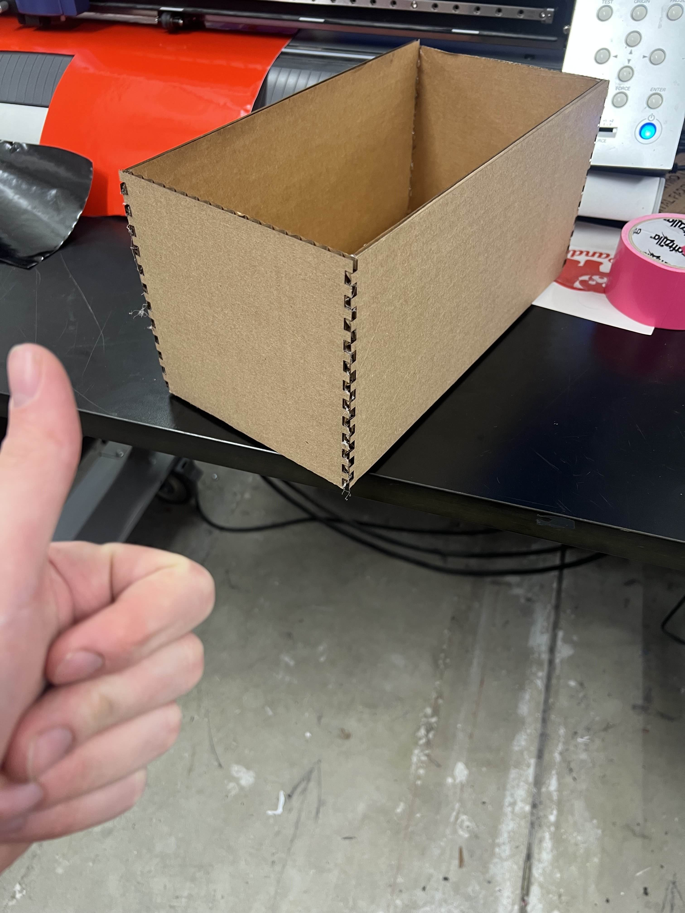
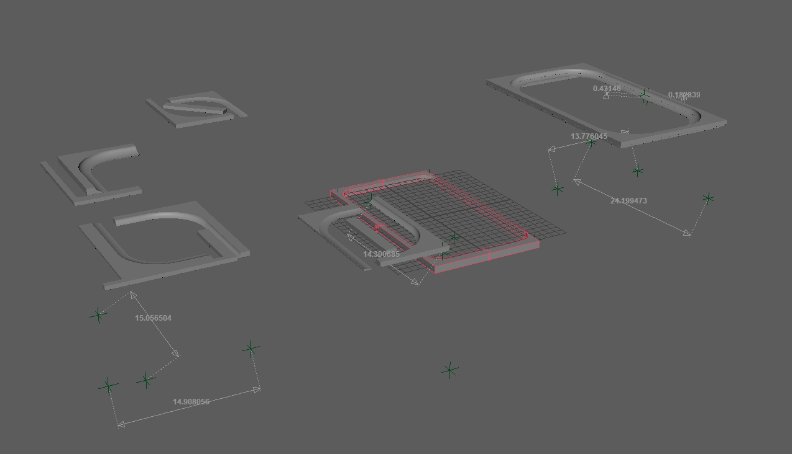
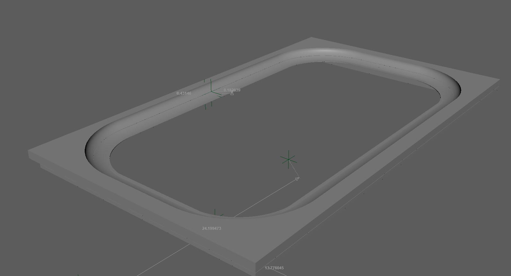
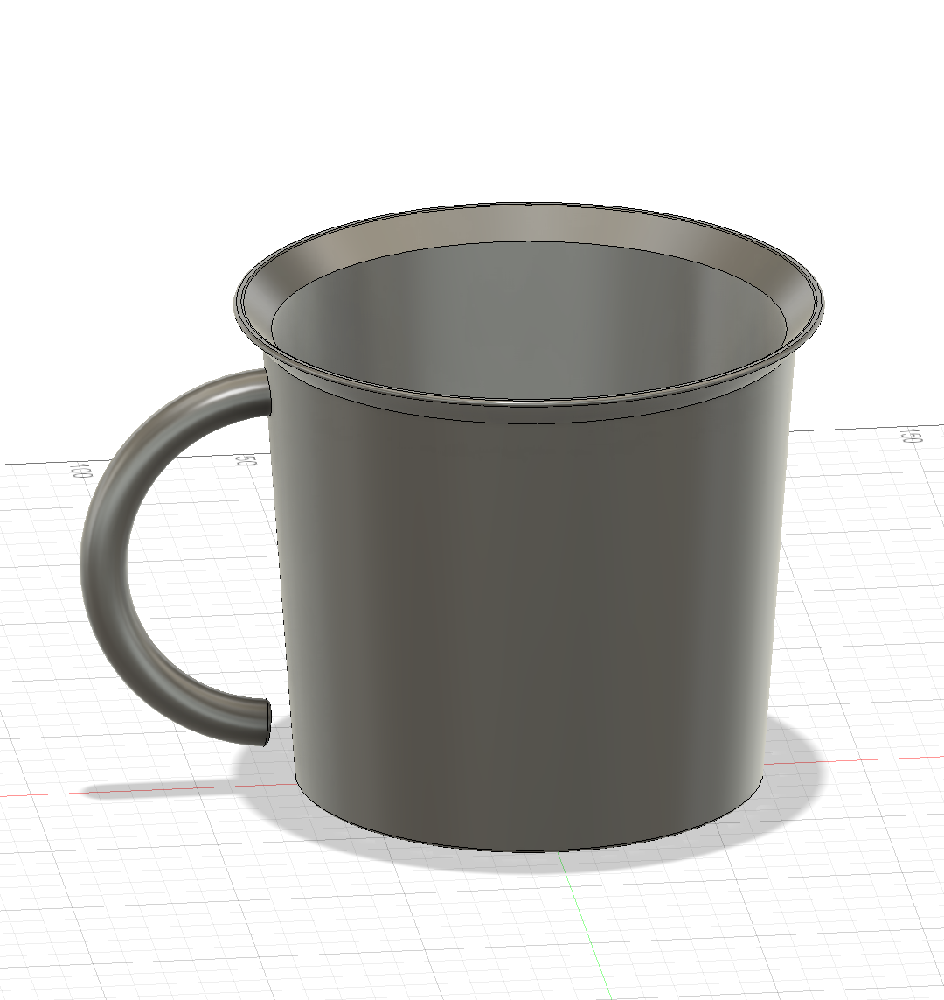
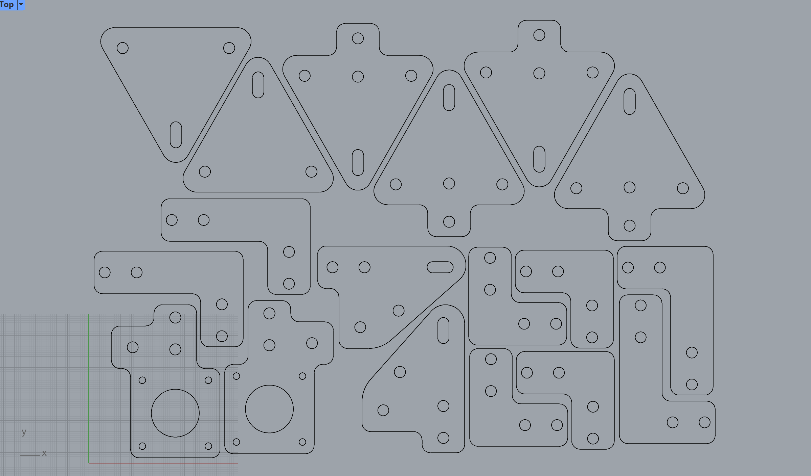
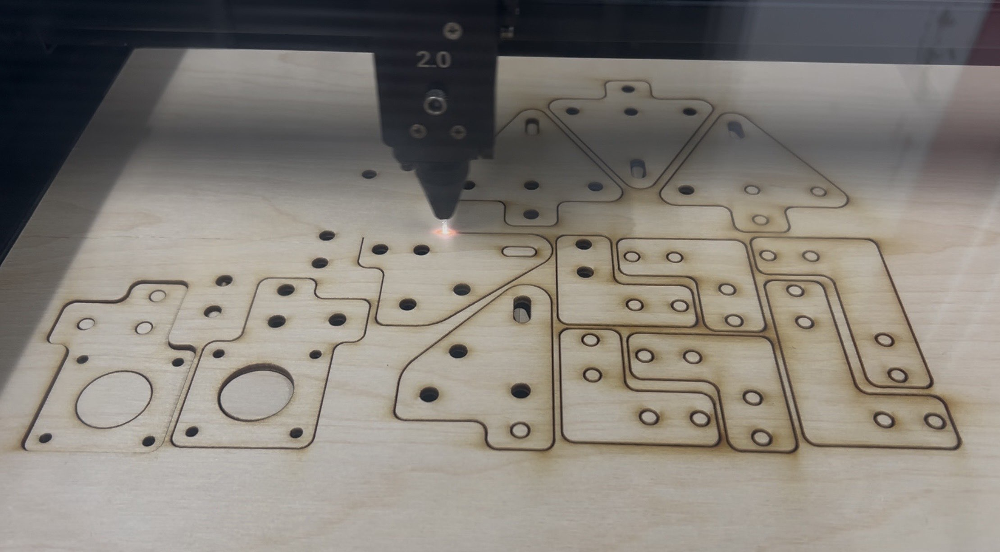

<div class="textcontainer">
<p class="margin"> </p>
<div style="display:flex; align-items:center; gap:120px;">
<h3>Week 2: 2D Design & Cutting</h3>
<a id="btn" href="./ProjectFiles.zip" download>Download Files</a>
</div>
<div class="spacer"></div>
<h4>Assignment 1: Make a Box</h4>
I decided to keep things very straightforward for my box, you'll find no frills on it at all. I started out by making this baby box:
<p class="margin"> </p>

<p class="margin"> </p>
Before upgrading to my full sized one:
<p class="margin"> </p>

<div class="spacer"></div>
<h4>Assignment 2: Fusion 360 Tutorial</h4>
Before this class, I have never worked with Fusion but I learned how to use Maya a long time ago. Up until this class, when I wanted to 3D model something I would always use Maya. I know full well that this is not Maya's optimal use case, but to get a handle on whether I personally feel better about modeling in Maya or in Fusion at this point, I did a quick tutorial, and then expanded upon it to create a frame for an ongoing project.


It's pretty incredible but I think that even already I prefer working with Fusion. I think it's really great that I'm learning to use this software!
<div class="spacer"></div>
<h4>Assignment 3: Fusion Modeling</h4>
For my models, I wanted to start with something simple. The first gift that I remember receiving is this canteen-like mug, so I tried my best to model it from memory. Here's how it turned out:
<p class="margin"> </p>

<p class="margin"> </p>
For the second model, I decided to take advantage of the assignment and cut out some components that I need for my final project for this course. Specifically, I need to build a gantry system and I am currently working on creating the prototype of that gantry. Components of the gantry are going to be laser cut wood and 3D printed PETG, so I did a first pass at cutting out all the components that I think I will need for the gantry. Though not exactly the same, you can find files similar to the ones I was working off of <a href="https://gitlab.cba.mit.edu/quentinbolsee/urumbotxy-2.0/-/tree/main?ref_type=heads">here</a>.
<p class="margin"> </p>
 
</div>